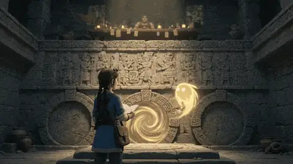

Kapitel 2
Zwischen den Schichten lesen
Sie liest die Wand wie einen Tatort: ein frisches Relief, eine Tafel in jüngerem Stein, Strichlisten am Rand eines Codex. Oxlahun ist sehr hilfsbereit.
Folgt baldStart / Geschichte
Geschichte
„Das Abbild“, ein Archäologie-Mystery im Sonnentempel. Vier Kapitel, in Arbeit.
Kaya stirbt an der allerersten Falle und erwacht an der Schwelle. Dort findet sie ihr eigenes Abbild, frisch in das Geisterwandbild gemeißelt, neben einer Verratstafel, die dem widerspricht, was ihr die Geistführerin des Tempels erzählt hat. Um weiterzuklettern, muss sie entscheiden, wie viel von K'ins umgeschriebener Geschichte sie mit sich tragen will.
Ein dichtes, atmosphärisches Mystery mit dem Herzen einer Coming-of-Age-Geschichte: das Vergnügen, einer Gelehrten dabei zuzusehen, wie sie eine Wand liest wie einen Tatort. Die Stimmung ist warm, neugierig und ein wenig melancholisch, die Gefahr eher unheimlich als blutig.
Vier Kapitel
Kapitel 1
Kaya erreicht den Fuß der Pyramide, weckt K'in und stirbt keine Stunde später in The Shell. Als sie an der Schwelle erwacht, ist etwas auf dem Wandbild neu.

Kapitel 2
Sie liest die Wand wie einen Tatort: ein frisches Relief, eine Tafel in jüngerem Stein, Strichlisten am Rand eines Codex. Oxlahun ist sehr hilfsbereit.
Folgt baldKapitel 3
Kaya stellt K'in vor dem Wandbild ihre Fragen. Der Tempel antwortet, bevor K'in es tut.
Folgt baldKapitel 4
Kaya entscheidet, was sie die Stufen hinauftragen will und was sie mit eigener Hand aufschreibt.
Folgt bald
Die Beweise
Kaya hat drei Hinweise: das gemeißelte Abbild, die neu gemeißelte Tafel und den aufgeschlagenen Codex auf dem Lesepult, an dessen Rand Strichlisten mehr Tode zählen, als sie in Erinnerung hat.
Und sie hat zwei Zeugen: einen geduldigen, trauernden Geist, den sie für jede Falle über ihr braucht, und Oxlahun, den redseligen Händler am Opfertisch, der Geistsplitter kauft und verkauft und allen Grund hat, sich zu wünschen, dass sie weiter stirbt.

Der sanfte Gegenspieler
Freundlich, nützlich und an ihrem Scheitern interessiert. Beim ersten Lesen ist Oxlahuns Hilfe einfach Hilfe, beim zweiten Lesen etwas anderes.
1 von 4 Kapiteln veröffentlicht
Die Geschichte erscheint Kapitel für Kapitel und ist gesetzt wie ein Buch: in deinem Tempo, im Tag- oder Nachtmodus.
Kapitel 1 lesen